Cobre novo e ferro com paleta nova
Nada foi promovido pra assets/sprites/. Tudo em pendentes/, gerado por
tools/sprites/v06_fundo_cobre_ferro.py (determinístico). Mesmos nomes, tamanhos e âncoras da família do ferro.
1 · Cobre
Referência do dono (só estilo, nada copiado): a pepita laranja-avermelhada com a mancha verde-azulada de oxidação na parte iluminada. Aproveitei: a mistura de salmão claro + vermelho-terroso nas sombras, e o verdete em manchas que seguem as 4 faixas de luz do minério (cada faixa laranja tem a sua irmã verde, então a mancha continua com brilho e sombra). Forma igual ao resto da família "chunky": pintas gordas cravadas na parede, lajes angulosas rachadas no veio, calombos no bruto.
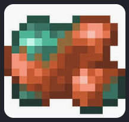
Cobre: #ffd2ae #f7966a #e0703f #aa4a2a
Verdete: #c9fbe9 #74dcbd #3fb094 #26796d
a 5ª cor (fundo do buraco, #52210f) é compartilhada.
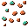
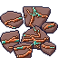
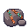
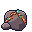
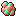
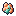
Trecho de parede com veio de 7 tiles (chão e parede do estágio névoa)
Mesma ordem de desenho do jogo: chão, topo da parede elevado 24 px com o ore_copper por cima, face 32×24.
Aglomerado irregular de 7 e, embaixo, o pior caso: 7 em linha reta.
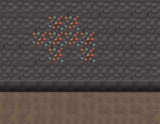
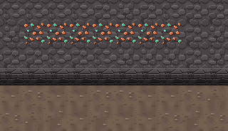
2 · Ferro com paleta nova
Referência do dono: tons bege-rosado no topo, cinza-acastanhado nos flancos. Aproveitei esses tons, sem copiar o desenho.
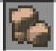
Antes: #ffe0bd #f4b27a #e8a066 #b86a38
Depois: #f3e2cf #dcc0a3 #b99b82 #7a6552
fundo do buraco: #6e3a22 → #3b3027.
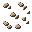
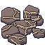
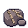
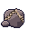
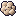
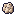
Antes × depois
| antes (no jogo) | depois (pendente) | |
|---|---|---|
| ore_iron | 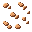 | |
| vein_iron | 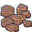 | |
| rock_small_iron_0 | 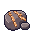 | |
| rock_small_iron_1 |  | |
| icon_iron | ||
| pickup_iron |  |
icon_iron_ingot ficou como está (barra de aço cinza-azulada, #1b1630): não destoa do ferro bege, ao contrário,
lê como "ferro refinado" ao lado do bruto. Não mexi.3 · Leitura dos minérios lado a lado
Cada coluna é um minério, cada linha uma forma (parede sobre wall_mist, veio e rocha sobre floor_mist).
Antes
| Ferro | Silício | Gelo | Magmatita | Cobre | Rocha comum | |
|---|---|---|---|---|---|---|
| Parede | 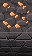 | 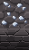 | 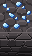 |  | · |  |
| Veio 2×2 | 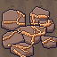 |  |  | 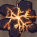 | · | · |
| Rocha pequena | 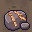 |  | 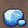 |  | · | 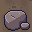 |
| Ícone | 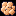 |  |  | · | · | |
| Pickup | 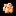 |  | · | · |
Depois (ferro novo + cobre)
| Ferro | Silício | Gelo | Magmatita | Cobre | Rocha comum | |
|---|---|---|---|---|---|---|
| Parede | 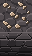 |  |  | 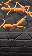 | 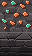 | 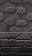 |
| Veio 2×2 | 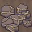 | 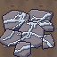 | 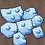 |  | 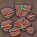 | · |
| Rocha pequena | 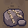 | 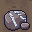 |  | 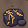 | 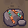 |  |
| Ícone | 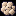 |  | 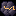 | 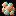 | · | |
| Pickup | 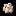 |  |  | 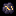 | 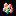 | · |
Na caverna, tudo junto (2×)
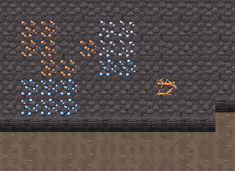
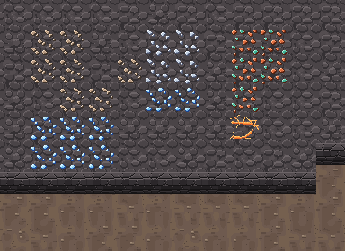
Pro Dev integrar
- Novos (6):
ore_copper32×32 (overlay no topo elevado em (x, y−24), igual ao ferro),vein_copper64×64 (2×2, overlay),rock_small_copper_{0,1}32×32,icon_copper16×16,pickup_copper16×16. Mesmas âncoras do ferro. - Ferro (6): substitui
ore_iron,vein_iron,rock_small_iron_{0,1},icon_iron,pickup_iron. Mesmos nomes e tamanhos. - Cores que o jogo usa por código pra "brilho do minério no escuro" e afins (
game/, ex. cor do ferro(232,160,102)) precisam acompanhar: ferro novo base#b99b82, cobre base#e0703f. - Sem animação. Contorno só nos pedaços soltos (icon/pickup/rocha); parede e veio são overlay sem contorno, como o ferro.